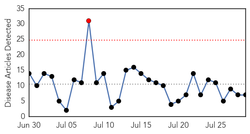

Influenza
30-Day Web Trend
1 alerts, 0 warnings

30-Day Twitter Trend
1 alerts, 0 warnings

Article Locations
Article Confidences

Top Articles:
- 0.998
- West Africa now threatened by Avian Flu
- 0.994
- Some Poultry Vaccines Allow More Virulent Viruses to Evolve
- 0.991
- Some vaccines support evolution of more-virulent viruses
- 0.874
- The Flu Crew: Med students provide vaccinations to community
- 0.751
- July 28, 2015 Archives
- 0.686
- More effective bird flu vaccine in the works
- 0.631
- Bird flu precautions in place
Top Tweets:
-
No tweets found for Jul 29, 2015
West Nile Virus
30-Day Web Trend
8 alerts, 3 warnings

30-Day Twitter Trend
0 alerts, 0 warnings

Article Locations


Article Confidences

Top Articles:
- 0.992
- Lakewood resident first 'probable' West Nile Virus case
- 0.978
- Hillsborough advisory issued for West Nile encephalitis virus
- 0.977
- Lakewood resident is Ohio’s first case of West Nile virus
- 0.973
- Lakewood resident could be Ohio's first 2015 case of West Nile virus
- 0.954
- City of Sugar Land
- 0.927
- City mosquitoes test positive for West Nile
- 0.854
- Pork linked to Washington salmonella outbreak, food safety emphasized
- 0.824
- Commissioners remind public of mosquito abatement program
- 0.752
- Washington County woman has West Nile Virus, first human case in Idaho this summer
- 0.629
- WATCHFUL MOSQUITO EYES: Edwardsville, Alton officials monitor and treat areas for West Nile Virus prevention
Top Tweets:
-
No tweets found for Jul 29, 2015